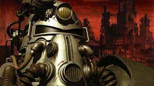
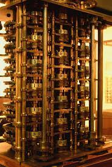
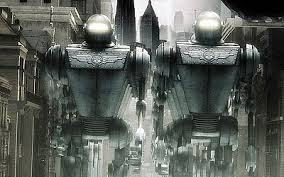
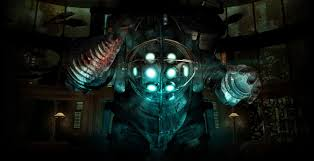
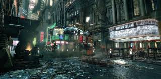
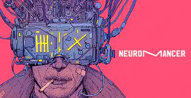
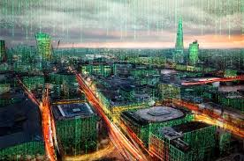
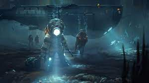
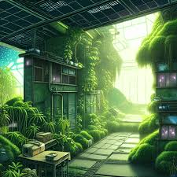

The future from the past, what it is, what it looks like and why we love it.
What is retrofuturism?
Just as we have our own conceptions of the future so did our ancestors, this is in essence what retrofuturism is. What the people before us thought the future would look like, whether that future they were thinking of has come and gone or it is the future that we think about as well.
What does it look like?
Many preconceptions of the future from the past are similar to our own. Megolithic cities populated by advanced robots and machines that are smaller, faster, sleeker and often comically exaggerated positive caricatures of reality. On the other hand there is the pessimistic view that sees the future as a barren wasteland where lonely people wander inside destroyed cities and fight off shambling creatures and radioactive amalgamations of horror. Although nearly every era of history has some kind of idea of what the future could look like, there are two clear distinctions: The Utopian and the Dystopian. The utopian being the megalithic cities populated by robots and the dystopian being the horror-filled wasteland. There are other distinctions within these two which are layed out below.
| Type of Retrofuturism | Description | Key Features | Notable Examples |
|---|---|---|---|
| Space Age | Evokes the optimism of the mid-20th century space race. | Futuristic space travel, rocket ships, and lunar bases. | "2001: A Space Odyssey," mid-20th-century sci-fi art.
|
| Atompunk | Embraces the aesthetics of nuclear and atomic energy from the mid-20th century. | Atomic-powered technology, Raygun Gothic designs. | "Fallout" video game series, mid-century sci-fi art.  |
| Steampunk | Blends Victorian-era aesthetics with steam-powered technology. | Gears, cogs, steam engines, and elaborate machinery. | "The Difference Engine"(film).  |
| Dieselpunk | Takes inspiration from the diesel era, combining aesthetics of the 1920s-1950s. | Art Deco designs, diesel engines, and noir themes. | "Sky Captain and the World of Tomorrow," "Bioshock."   |
| Cyberpunk | Envisions dystopian futures dominated by advanced technology and cyber warfare. | Neon cityscapes, hackers, and high-tech low life. | "Blade Runner," "Neuromancer," "The Matrix."    |
| Solarpunk | Offers an eco-conscious view of the future with sustainable and green technology. | Solar power, eco-cities, and renewable energy sources. | "The Water Will Come," "Sustainability-focused art."   |
Why do we love it?
There are many reasons why retrofuturism is such a popular medium for entertainment but there are a few unique characteristics that set it apart from other story and theme structures. The main one being anemoia, for those who don't know anemoia is the feeling of nostalgia for something that you've never felt or experienced. The central aspect of this is the common theme of criticism of contemporary society. Often these stories involve a primary or underlying criticism of modern life which drives the feeling of anemoia becuase it can represent a version of the world devoid of our modern problems, that is not to say that these fictional worlds are without any problems but rather just representations of what could be. This ties into the distinctions of utopian and dystopian retrofuturism as some people enjoy these fictional worlds as they represent the ideal or others are just fascinated by the what could be of dystopian worlds.